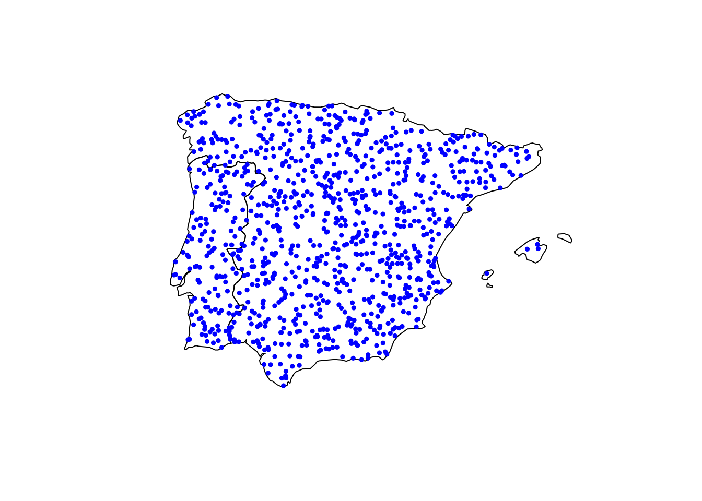

![]()
library(terra)
library(sf)
library(purrr)
library(dplyr)
# Read occurrence points
ph <- st_read("Pinus halepensis.shp") |> st_cast("POINT")
pn <- st_read("Pinus nigra.shp") |> st_cast("POINT")
ps <- st_read("Pinus sylvestris.shp") |> st_cast("POINT")
pp <- st_read("Pinus pinaster.shp") |> st_cast("POINT")
pts <- bind_rows(ph, pn, ps, pp) |>
mutate(ID = row_number()) |>
select(-Name)
# Load CHELSA URLs
urls <- readLines("urls.txt") |> trimws()
# Loop over files
results <- purrr::map(
urls,
function(url) {
file <- basename(url)
dest <- file.path(tempdir(), file)
download.file(url, dest, mode = "wb")
r <- terra::rast(dest)
val <- extract(r, pts, bind = TRUE) |> as.data.frame()
unlink(dest)
return(val)
}
)
climate_pinus <- reduce(results, inner_join, by = "ID")
saveRDS(climate_pinus, "monthly_extracted.rds")Mapping climate spaces for Mediterranean pines
In this post, I describe how I extracted monthly climate values from the CHELSA v2.1 dataset for thousands of georeferenced points corresponding to four Mediterranean pine species: Pinus halepensis, P. pinaster, P. nigra and P. sylvestris. The ultimate goal is to characterize their climate niches across Europe.
Tree occurrence data
The first step was retrieving tree occurrences from official sources. I used the shapefiles from the EU-Forest dataset (Mauri et al. 2017), which provides high-resolution distribution data for tree species in Europe.
Climate data
CHELSA (Climatologies at High Resolution for the Earth’s Land Surface Areas) offers climate variables (temperature, precipitation, etc.) at 1 km\(^{2}\) spatial resolution (Karger et al. 2017, 2021). It’s widely used in ecological and biogeographic modeling. There are several products available (different temporal resolutions). In this case, I used CHELSEA V.2.1 for get monthly data from 1980 to 2020.
How to download CHELSA data?
There are several approachs: direct download of specific months, or get a list of urls that can be then programatically downloaded using wget or via Python or R script.
For instance, if you want to download directly using command line:
wget https://os.zhdk.cloud.switch.ch/chelsav2/GLOBAL/monthly/tas/CHELSA_tas_01_1980_V.2.1.tifIn R using you can used download.file() from base R or curl_download() from curl pkg.
About R packages
Although there are some R packages for downloading CHELSA data (chelsa, CHELSAcruts, climenv, ClimDatDownloadR), many of them are outdated or broken due to changes in URLs or lack of maintenance. After reviewing several of these, I decided to write a custom script instead.
R Workflow to downloada and extract climate data
Initially, I wrote a script that reads a list of URLs, downloads each raster temporarily, extracts climate values for each point, and then removes the raster to save space.
Although this worked, it was slow because each iteration downloaded a ~800 MB raster.
But what if I need to extract data for other locations? The script would still work, but not efficiently. Each run would require re-downloading large files, which is time-consuming and redundant. To address this, my next approach was to define an area of interest (AOI), download the climate data once, clip by AOI, store the clipped raster locally, and then perform the data extraction from this subset. At this point, I decided that using data from the Iberian Peninsula would be sufficient for the analyses I had planned—both current and near-future. So, how did I implement this solution?
Optimized workflow?
As I said, my attemp was to download every raster and clip using the bounding box of Iberian Peninsula, then stored them locally (~3.45 GB) and use them for repeated extraction runs. This approach was equal in time comsuming the first time (download and clip by AOI), but very fast when I would like to extract climate data within Iberian Peninsula, because the data did not to be downloaded more than once.
Here is the script I used to do that:
# Bounding box of Iberian Peninsula (wgs84)
bbox <- ext(-10.0, 4.5, 35.5, 44.5)
options(nwarnings = 500) # This one to increase the storage of warnings
# custon function
clipChelsea <- function(url, bbox, out_dir) {
# Download the file
file_name <- basename(url)
dest_file <- file.path(tempdir(), file_name) # donde descargo
out_file <- file.path(out_dir, file_name) # donde guardo
tryCatch({
download.file(url, dest_file, mode = "wb", quiet = FALSE)
r <- terra::rast(dest_file)
r_crop <- crop(r, bbox)
writeRaster(r_crop, out_file, overwrite = TRUE)
unlink(dest_file)
rm(r, r_crop)
gc()
message("Stored at: ", out_file)
}, error = function(e) {
message("Error with ", url, ": ", e$message)
})
}
# read urls
urls <- readLines("urls.txt") |> trimws()
urls <- trimws(urls, which = "right") # remove blank space at the end of each line
purrr::walk(urls, ~ clipChelsea(.x, bbox, out_dir = "./data/")) Once the data from our AOI (Iberian Peninsula) are downloaded, we could extract data for the desired locations. For instance, supose I have a dataset with ~ 1000 points:
# This script generates a random 1000 points dataset within Iberina Peninsula
library(rnaturalearth)
library(rnaturalearthdata)
library(sf)
library(dplyr)
# Get the Iberian Peninsula countries (Spain + Portugal)
spa_por <- ne_countries(scale = "medium", returnclass = "sf") |>
filter(admin %in% c("Spain", "Portugal"))
# Ensure all points within Iberian Peninsula bounding box
ip_bbox <- st_as_sfc(st_bbox(c(
xmin = -10.0, xmax = 4.5,
ymin = 35.5, ymax = 44.5
), crs = 4326))
ip <- st_intersection(spa_por, ip_bbox)
set.seed(123)
# Generate 1000 random points inside the Iberian Peninsula polygon
pts <- st_sample(ip, size = 1000, type = "random")
plot(st_geometry(ip))
plot(st_geometry(pts), col = "blue", pch = 19, cex=.5, add=TRUE)
And finally, the script that extracts and tidy the climate data was:
files <- list.files("./data/", pattern = "*.tif", full.names = TRUE)
extractChelsea <- function(file) {
r <- terra::rast(file)
val <- terra::extract(r, vect(pts))
}
chelsea_data <- files |> purrr::map(extractChelsea)
d <- reduce(chelsea_data, inner_join, by = "ID")
# Now we rename the variables to extract year, month and variable and pivot to longer,
# and also express the units in ºC and mm
monthly_data <- d |>
rename_with(~ str_extract(., "(tas|pr)_[0-9]{2}_[0-9]{4}"),
.cols = starts_with("CHELSA_")) |>
pivot_longer(-ID, names_to = c("variable", "month", "year"),
names_sep = "_", values_to = "value") |>
mutate(year = as.numeric(year),
month = as.numeric(month)) |>
mutate(value = case_when(
variable == "tas" ~ (value / 10) - 273.15, # To ºC
variable == "pr" ~ value / 100 # mm/100
))This approach took:
user system elapsed
13.923 2.541 29.779
So although the local storage uses ~3.45 GB, future extractions are much faster (e.g., 1000 points × 978 variables in under 30 seconds).
What’s next?
In upcoming posts, I’ll use these extracted values to visualize and analyze climate spaces and species-specific climate envelopes.
Stay tuned!
References
Karger, D. N., O. Conrad, J. Böhner, T. Kawohl, H. Kreft, R. W. Soria-Auza, N. E. Zimmermann, H. P. Linder, and M. Kessler. 2017. Climatologies at high resolution for the earth’s land surface areas. Scientific Data 4:170122.
Karger, D. N., O. Conrad, J. Böhner, T. Kawohl, H. Kreft, R. W. Soria-Auza, N. E. Zimmermann, H. P. Linder, and M. Kessler. 2021. Climatologies at high resolution for the earth’s land surface areas. EnviDat.
Mauri, A., G. Strona, and J. San-Miguel-Ayanz. 2017. EU-forest, a high-resolution tree occurrence dataset for europe. Scientific Data 4:160123.
Citation
BibTeX citation:
@online{pérez-luque2025,
author = {Pérez-Luque, Antonio J.},
title = {Obtaining Climate Data to Plot Climate Spaces for
{Mediterranean} Pines with {CHELSA} and {EU-Forest}},
date = {2025-07-11},
url = {https://ajpelu.github.io/web/posts/2025-17-11-climate-chelsea/},
langid = {en}
}
For attribution, please cite this work as:
Pérez-Luque, A. J. 2025, July 11. Obtaining climate data to plot climate
spaces for Mediterranean pines with CHELSA and EU-Forest. https://ajpelu.github.io/web/posts/2025-17-11-climate-chelsea/.